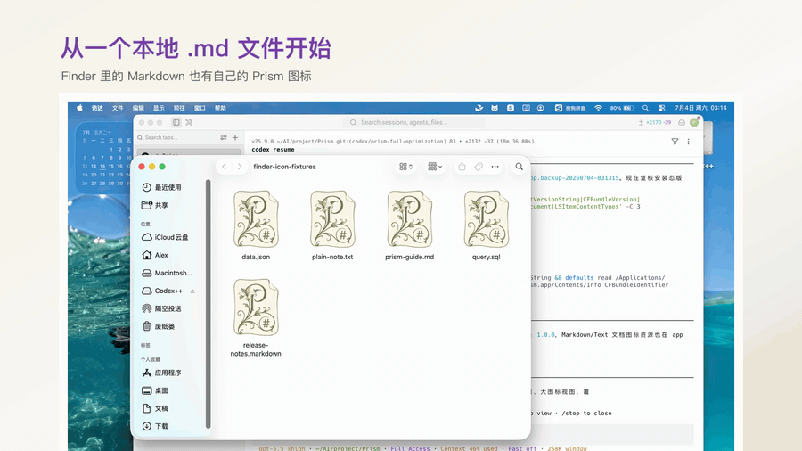

不只是能写 Markdown，还要写得有版面。
Prism 把编辑、预览、主题、知识图谱、三语界面和导出放在一起。它面向本地文档，也面向认真完成一篇文稿的过程。
主题不是皮肤，是文稿气质。
同一篇文档切换到 MiaoYan、Inkstone、Slate、Mono 或 Nocturne Dark 时，变化的不只是颜色。标题、正文、代码、表格和引用都会跟着重新组织。
中文、English、日本語，都能直接开始写。
Prism 1.0.0 不是只面向单一语言的本地工具。主界面、设置和核心写作流程都覆盖中文、英文和日文。
不只写一篇，也整理一组文档。
链接、反链和知识图谱让本地 Markdown 之间的关系变得可见。写作计划、阅读摘录和技术笔记可以组成一个可以浏览的文档空间。
公式、图表、思维导图，也要排得体面。
Mermaid、PlantUML、Markmap 和 KaTeX 不该只是藏在代码块里的语法。Prism 让这些复杂内容进入预览版面。
写完之后，版面也别散掉。
HTML、PDF、PNG 和 DOCX 都从同一篇文稿出发。导出前，Prism 会把缺图、坏链和渲染风险摆出来。
从一个本地 .md 文件开始。
Prism 尊重本地文件和 Finder 里的工作方式。Markdown 和文本文件可以有自己的图标，也可以直接打开进入写作。

Prism 1.0.0 已发布。
macOS Apple Silicon 首发。Windows 和 Linux 会在真机验证后推出。
SHA256 ef995e02a2a8aa1a4319d7929688c9c4f59125af6b7cc13fd8601a3f99919993